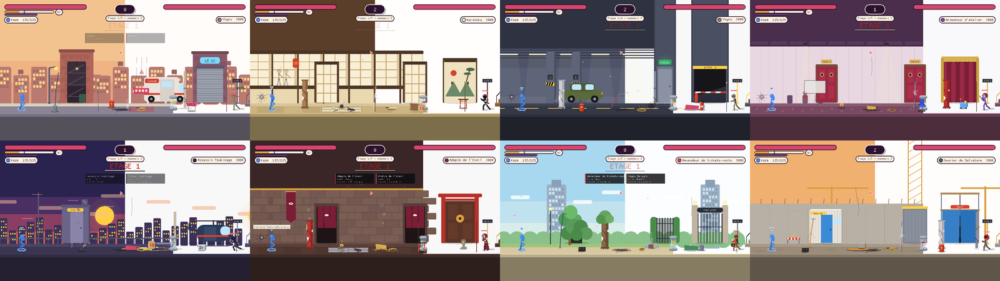

Captures du vrai moteur en temps reel (400 px, 48 couleurs). 65 elements structurels, 5 par terrain : vitres et cloisons, piliers, poteaux, ecrans et serveurs, objets suspendus, garde-corps, portes et ascenseurs, tuyaux, tatamis et dalles. Un corps projete les abime (petit bonus de degats, budget fini, jamais sur un boss) ; un coup au sol fait tomber un objet suspendu apres une annonce de 0,6 s qui touche tout le monde. Une interaction n'est appliquee que quand elle a du sens dans le lieu. Pour chaque scene : Valider ou A refaire (+ remarque), puis genere le texte et colle-le dans le chat.
